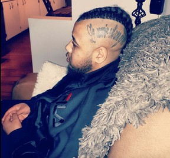

Yannick Bandaogo History - Winnipeg Stabbing Threatenings
April 3rd, 2021
Yannick Bandaogo, the black who stabbed 7 presumably White People in an anti-White hate crime on March 28th, apparently had a history of at least threatening people with knives.
TDC_ARTICLE_START
In January, Bandaogo was sentenced in Winnipeg to 160 days of time served and one year of supervised probation, after admitting to threatening to stab two city employees.
Court heard the two were on patrol in the Exchange District, Aug. 10, 2020, shortly after 6 p.m., when they came upon Bandaogo, who started yelling at them and making threatening gestures to cut their necks.
The pair continued on their route, with Bandaogo continuing to yell at them and make slicing gestures at his throat.
At McDermot Avenue and Arthur Street, Bandaogo walked toward them with a 12-inch knife, saying: "I will cut you."
Bandaogo continued to threaten the two civic employees as they called police, who arrived a short time later and arrested the man.
TDC_ARTICLE_STOP
Yannick Bandaogo
He seems like quite the prize. So, here we have a Jequeerus who gets a light sentence, just 160 days in fact, for threatening two presumably White People with stabbings while carrying a 12 inch knife. Then, after given light sentences, he proceeds to actually stab 7 presumably White People with possibly even the same knife.
TDC_ARTICLE_START
Bandaogo later pleaded guilty to two counts of uttering threats and one count of carrying a concealed weapon. Two counts of assault with a weapon were stayed.
Asked why he had the knife in the first place, Bandaogo told provincial court Judge Lee Ann Martin he needed it for protection, after street gangs twice tried to attack him.
"I had the knife to defend myself," Bandaogo said. "If I didn’t have the knife, I would have died in the street… It was for intimidating people — if they were going to attack me."
Martin said she believed Bandaogo when he said it was dangerous on the street, but he threatened people who posed no threat to him.
"Three times, you followed them, you threatened to cut them, and you brandished your knife," Martin said. "You didn’t use it in your defence, you scared those people. We can’t have that."
TDC_ARTICLE_STOP

Thank god this little angel was only given 160 days after threatening two White People with a 12 inch knife. Thank god. And oh, BTW, he apparently was "known to police" in Quebec, although didn't have any convictions for anything. So happy he gets a slap on the wrist while our goys get 419 years for car accidents.
I almost forgot one crucial detail that I only got today from a different article.
Vancouver is Awesome:
TDC_ARTICLE_START
Of the seven victims, six are women. They range in age from 22 to 78. Bandaogo did have a history of violence, Tansey said, referencing the warrants and his criminal record in Quebec. The victim who died was in her late 20s.
One thing investigators are ready to rule out, Tansey, said was radicalization.
“That is not what we're looking at right here. There's no nexus for us in this investigation to believe that there's anything in relation to radicalization,” she said.
TDC_ARTICLE_STOP
 You see goy, the one thing that we can absolutely rule out is "radicalization." We can rule that out as early as the day of. There is absolutely no way that Yannick Bandaogo could have possibly seen something on the television, on social media, on YouTube, that caused him to stab 7 presumably White People. Nope, just flat out not possible. It simply could not happen. The RCMP/IHIT team are a crack squad of investigators who have ruled this out after a cursory flashlight to the eyes examination. Ruled it out in fact, while Bandaogo was in the hospital. Yep, no possibility of radicalization here at all. Thanks Michelle!
You see goy, the one thing that we can absolutely rule out is "radicalization." We can rule that out as early as the day of. There is absolutely no way that Yannick Bandaogo could have possibly seen something on the television, on social media, on YouTube, that caused him to stab 7 presumably White People. Nope, just flat out not possible. It simply could not happen. The RCMP/IHIT team are a crack squad of investigators who have ruled this out after a cursory flashlight to the eyes examination. Ruled it out in fact, while Bandaogo was in the hospital. Yep, no possibility of radicalization here at all. Thanks Michelle!
Michelle Tansey
Or the RCMP is an anti-White organization with an agenda here that I'm here to get to the bottom of.

You see goy, the one thing that we can absolutely rule out is "radicalization." We can rule that out as early as the day of. There is absolutely no way that Yannick Bandaogo could have possibly seen something on the television, on social media, on YouTube, that caused him to stab 7 presumably White People. Nope, just flat out not possible. It simply could not happen. The RCMP/IHIT team are a crack squad of investigators who have ruled this out after a cursory flashlight to the eyes examination. Ruled it out in fact, while Bandaogo was in the hospital. Yep, no possibility of radicalization here at all. Thanks Michelle!